Запишитесь на бесплатную консультацию — расскажем о программе и подберем оптимальный для вас формат
SternMeister — образовательный центр с допуском AZAV
Мы поможем подготовить документы для вашего консультанта, и если вам одобрят Bildungsgutschein, обучение оплатит Jobcenter или Agentur für Arbeit.
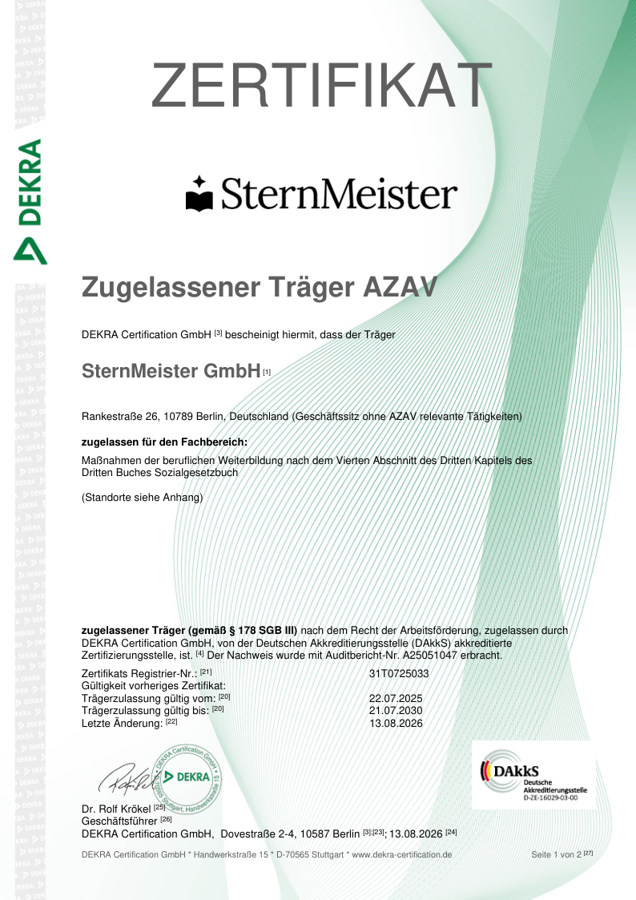
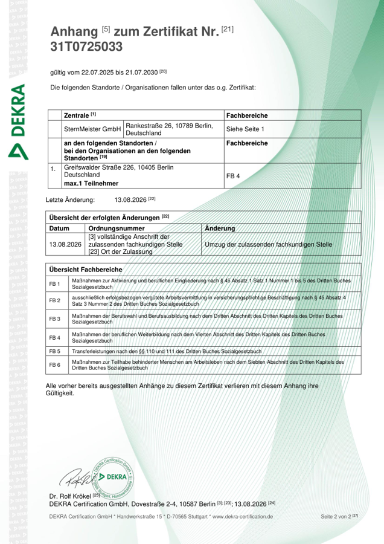
Отзывы студентов и выпускников
ГюльнараСтудентка SternMeister
Меня зовут Гюльнара, и за моими плечами — путь, полный испытаний, но и важных открытий. Я мама двух замечательных двойняшек, я та которая никогда не сдаётся, даже когда кажется, что всё против неё. В Украине у меня была насыщенная профессиональная жизнь: высшее образование бухгалтера, работа бухгалтером, потом кассир-контролер, потом менеджером по продажам в Metro Cash & Carry, а потом — собственный бизнес мой салон красоты в который было вложено ВСЕ!!! силы средства и душа. Но пандемия, а затем война перечеркнули всё...
Ради безопасности сыновей пришлось уехать в Германию. Первые месяцы были тяжёлыми: языковой барьер, тоска, ощущение, что жизнь остановилась. Чтобы выжить, устроилась на книжный склад — собирала заказы, хотя внутри понимала: так не может продолжаться вечно. Мои амбиции, образование и опыт твердили: «Ты способна на большее!» И тогда я подумала вернуться к истокам — бухгалтерии. Только подумала но не стала сразу искать курсы. Спустя пару часов открыла Instagram листая ленту мне попадается первой же реклама школы SternMeier. Сказала себе: «Это знак!» — и я записалась. И ни капли не жалею! Что меня вдохновляет в учёбе?
🔥 Подача материала — всё объясняют доступно, структурированно, без «воды».
💙 Преподаватели— неравнодушные, поддерживают, верят в студентов.
Правда, немецкий язык даётся пока сложнее всего — термины, документы, но я упорно работаю над этим. Сейчас я учусь, адаптирую украинский опыт под немецкие реалии и чувствую, как понемногу возвращаю себе уверенность. Впереди еще очень много всего, но я знаю что это новая глава моей жизни. Этот путь научил меня главному: даже после самых тяжёлых потерь можно начать заново. Главное — не бояться сделать первый шаг.
ВикторияСтудентка SternMeister
Привет! Меня зовут Виктория, мне 45 лет. Я мама двух детей и приехала в Германию из Украины в 2022 году. До этого более 20 лет я работала главным бухгалтером в разных компаниях — занималась всем: от повседневной бухгалтерии до подготовки годовой отчётности и налогов. После переезда я поначалу немного подрабатывала, но поняла, что очень хочу снова заниматься тем, что люблю и умею — бухгалтерией. Я начала искать курсы, которые могли бы помочь мне адаптировать мой опыт к немецкой системе. Очень важно было, чтобы обучение было понятным, с поддержкой, на русском языке, и...
…в то же время с ориентацией на реальные требования работодателей. Так я и нашла Штернмейстер — и почувствовала, что это то, что нужно. Больше всего мне нравится в обучении практическая направленность, а ещё то, как поддерживают преподаватели. Конечно, иногда бывает трудно, особенно с языком и новой терминологией — но это нормально. Главное — я снова чувствую, что двигаюсь к своей профессии.
Очень жду возможности применить знания в немецкой компании и снова стать уверенным специалистом — уже здесь, в Германии.
ЛюдмилаСтудентка SternMeister
Курс от Sternmeister стал для меня настоящей поддержкой. Он вернул мне надежду и уверенность в своих силах. Здесь обучение идёт на русском языке, но с упором на немецкую бухгалтерскую лексику. Отдельно есть уроки немецкого, где мы учимся понимать бухгалтерские документы и уверенно говорить на профессиональные темы — это очень помогает. А ещё — мы реально работаем в бухгалтерских программах Lexware и DATEV, не просто читаем теорию, а делаем, как в жизни. Я очень благодарна за этот курс. Он стал для меня первым шагом назад к любимому делу — и вперёд к новой жизни в Германии.
НатальяСтудентка SternMeister
Очень понравился преподавательский состав, реальные эксперты с немецких компаний, сразу понятно к чему готовится на реальной работе, отвечают даже в телеграме, если что непонятно.
ДианаСтудентка SternMeister
Переехали в Германию с семьей, первое время работала в клининге долгое время, очень сложно совмещать детей и работу, решила обучится на бухглатеров, так как очень много открытых вакансий. Сейчас прохожу программу по бухгалтерии. Преподаватели сильные, я начала с нуля.
ИринаСтудентка SternMeister
Я закончила экономический, работала бухгалтером 6 лет. Когда переехали в Германию, я была уверена, что смогу найти работу, но много есть подводных камней, работу найти не получалось, нужно знание програм и опыт на немецком рынке. Учусь уже пару месяцев и это именно то, что мне было нужно.
АннаСтудентка SternMeister
Обучаюсь уже несколько месяцев на курсе бухгалтерии, изначально переживала из-за немецкого (он у меня А2), но Sternmeister помогает и в этом плане: есть разговорный клуб, уроки по лексике и грамматике, здорово помогает. Сильные преподаватели, все очень на высоком качестве.
Видеоинтервью со студентами
Каково учиться в SternMeister? Посмотрите интервью со студентами и выпускниками: они рассказывают о занятиях, преподавателях и своём пути к работе в Германии.
Всю жизнь в торговле — впервые осваивает профессию бухгалтера
Интервью с Еленой (11 мин)
★★★★★
Из главного бухгалтера в Одессе в бухгалтеры в Германии
Интервью с Натальей (4 мин)
★★★★★
Из Amazon в бухгалтерию: ведёт дела своего предприятия
Интервью с Еленой (5 мин)
★★★★★
Выбрала бухгалтерию под свой аналитический склад ума
Интервью с Наилей (9 мин)
★★★★★
Бухгалтер и экономист из Кыргызстана осваивает немецкую систему
Интервью с Еленой (10 мин)
★★★★★
Из филолога в бухгалтеры в Германии
Интервью с Яной (5 мин)
★★★★★
Выбирала курс по табличке в Excel — и не прогадала
Интервью с Олёной (8 мин)
★★★★★
Опытный бухгалтер из Украины возвращается в профессию в Германии
Интервью с Ириной (4 мин)
★★★★★
У неё ресторан и недвижимость — учится вести бухгалтерию сама
Интервью с Кариной (7 мин)
★★★★★
Открыла своё дело — теперь осваивает немецкую бухгалтерию
Интервью с Дианой (13 мин)
★★★★★
От коммерческого директора — к профессии бухгалтера в Германии
Интервью с Юлией (13 мин)
★★★★★
Из директора магазина в Украине — в Buchhalterin в Германии
Интервью с Дарьей (11 мин)
★★★★★
С кухни в отеле — обратно в профессию бухгалтера
Интервью с Элеонорой (10 мин)
★★★★★
Возвращается в профессию бухгалтера после паузы по уходу за ребёнком
Интервью с Инной (5 мин)
★★★★★
Из бухгалтера в Украине — в Buchhalterin в Германии
Интервью с Олёной (5 мин)
★★★★★
С 17-летним опытом заново осваивает профессию бухгалтера в Германии
Интервью с Татьяной (16 мин)
★★★★★
От работы не по специальности к профессии Buchhalterin
Интервью с Татьяной (8 мин)
★★★★★
С нуля осваивает профессию бухгалтера
Интервью с Еленой (4 мин)
★★★★★
В 51 год осваивает профессию бухгалтера с нуля
Интервью с Юлия (10 мин)
★★★★★
Предприниматель осваивает бухгалтерию для своего бизнеса
Интервью с Александром (10 мин)
★★★★★
Из электрика в бухгалтеры в Германии
Интервью с Алесей (8 мин)
★★★★★
Из юриста в Украине в бухгалтеры в Германии
Интервью с Яной (15 мин)
★★★★★
Год искала работу впустую — устроилась бухгалтером после курса
Интервью с Татьяной (5 мин)
★★★★★
Из банка в бухгалтерию: выбрала стабильную профессию
Интервью с Мариной (5 мин)
★★★★★
Закончила курс и через неделю вышла на работу
Интервью с Русланом (5 мин)
★★★★★
Осваивает бухгалтерию, чтобы вести счета на своей работе
Интервью с Леонидом (10 мин)
★★★★★
Из балета — в бухгалтерию: нашёл работу ещё до конца курса
Обучение на русском языке + 150 часов профильной лексики
Бухгалтер (Finanzbuchhalter)
Если вам нравится разбираться в цифрах и документах, присмотритесь к бухгалтерии. Здесь важны внимательность и системный подход, а со временем можно вырасти до Bilanzbuchhalter. Выход на рынок уже через 2–4 месяца после выпуска.
Медицинский администратор (Praxismanager)
Если вам нравится помогать людям и организовывать процессы, вам подойдёт работа на ресепшене клиники: общение с пациентами, запись на приём и медицинские документы. Дефицит кадров в этой сфере позволяет быстро выйти на работу.
от 3 500 €/месЗарплата после обучения — от 3 500 €, с ростом до 4 500 € на позиции Bilanzbuchhalter
Программа · 7 месяцев
Курс «Бухгалтер в Германии» · Finanzbuchhalter:in
Бухгалтерия в Германии — для тех, кто хочет освоить новую профессию или применить прежний опыт после переезда. На курсе вы разберётесь в немецком учёте и потренируетесь работать с документами и профессиональными программами.
Длительность7 месяцев
ФорматОнлайн
СертификатDEKRA · Weiterbildung
ФинансированиеBildungsgutschein
Практика в DATEV и Lexwareбухгалтерские документы и налоговая отчетностьВозможность Home Office после первого года150 часов профильного немецкого + AI-тренажёр собеседований
Начать можно и без опыта работы в офисе. Мы объясняем основы, постепенно переходим к практике и помогаем разобраться в требованиях немецкого рынка труда.
от 3 000 €/месЗарплата медицинского администратора в Германии после обучения— с возможностью карьерного роста и роста дохода
Программа · 6 месяцев
Курс «Администратор медицинской практики» / Mitarbeiter: in für die Rezeption und Praxisempfang
Научитесь организовывать приём в медицинском праксисе: записывать пациентов, вести документы и помогать команде с повседневными задачами. Медицинское образование для начала обучения не требуется.
Длительность6 месяцев
ФорматОнлайн
СертификатDEKRA · Weiterbildung
ФинансированиеBildungsgutschein
Работа с медицинскими документами и цифровыми сервисамиОрганизация приёма и общение с пациентамиОсновы расчётов, защиты данных и управления качеством в медицинской практикеПрофессиональный немецкий и подготовка к собеседованию
Подойдёт тем, кому нравится общаться с людьми, помогать пациентам и хочется работать в стабильной сфере здравоохранения.
На занятиях вы разбираете теорию и сразу применяете её на практике. Преподаватели и кураторы помогают дойти до конца программы и подготовиться к поиску работы.
1
Преподаватели с практическим опытом в Германии
Они показывают, как устроена работа в профессии, и разбирают задачи, с которыми можно столкнуться после курса.
2
Для будущих бухгалтеров: практика в DATEV и Lexware на учебных задачах
Для будущих администраторов клиники: практика в CGM TURBOMED, медицинская документация, организация приёма и цифровой офис.
3
Реальная помощь в трудоустройстве
Адаптируем резюме под немецкие стандарты, проведём тренировочные собеседования
4
Объясняем материал на русском и постепенно вводим профессиональный немецкий:
термины, документы и общение на работе. Отдельный блок для подготовки к собеседованию на немецком языке.
5
Персональный куратор поможет с организационными вопросами во время учёбы и поддержит в трудный момент
6
Проекты для вашего портфолио
Создадите собственные проекты, которые сможете показать работодателю и добавить в резюме
На практических заданиях вы соберёте примеры работ, о которых сможете рассказать на собеседовании и добавить в портфолио.
Ксения БарковскаяDozentin «Deutsch» und «Jobsuche»
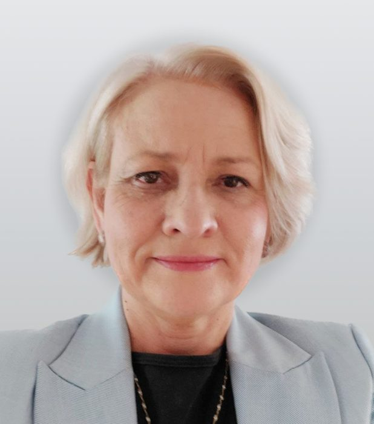
Екатерина РушковскаяDozentin «Finanzbuchhaltung»
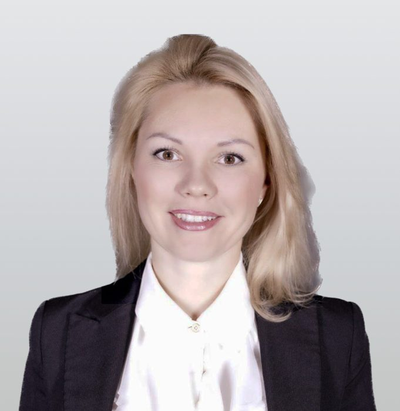
Елена НинштильDozentin «Finanzbuchhaltung»
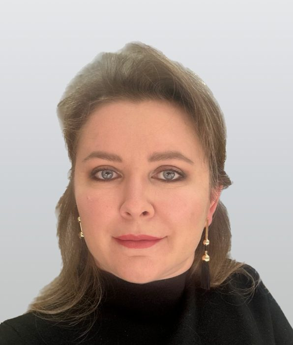
Ирина КапустинскаяDozentin «Finanzbuchhaltung»
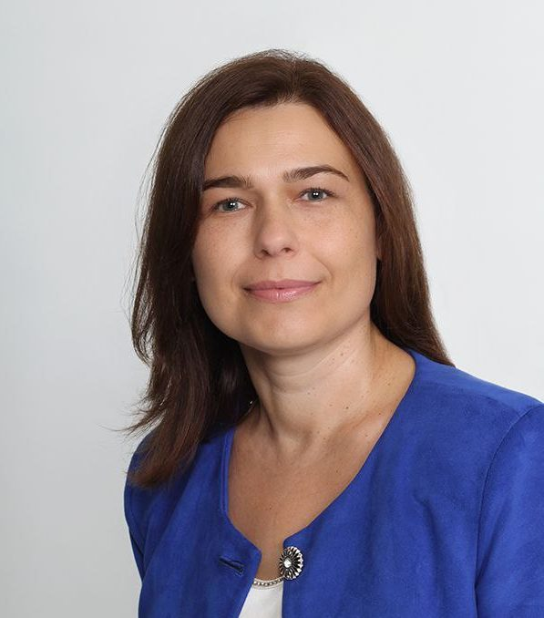
Алла БорхулаDozentin «Finanzbuchhaltung»
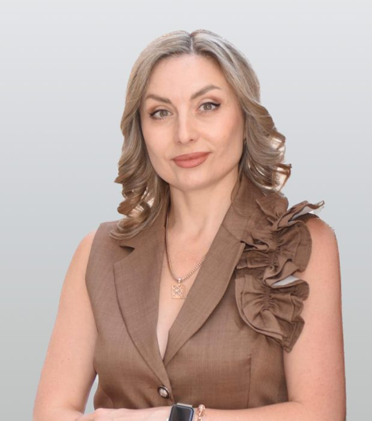
Светлана КейерDozentin «Finanzbuchhaltung»
Начните карьеру в Германии
Выберите направление, которое вам ближе, и узнайте, как проходит обучение
Помогаем подготовиться к поиску работы: от резюме до собеседования
Сопровождаем до выхода на работу в Германии
1
Резюме под немецкий рынок
поможем описать ваш опыт и подготовить сопроводительное письмо.
2
Собеседования
потренируем ответы на типичные вопросы.
3
Практика
разберём рабочие задачи на курсе.
4
Поиск вакансий
покажем, где искать и как откликаться.
5
После выпуска
подскажем следующий шаг, если понадобится помощь.
Наши партнёры
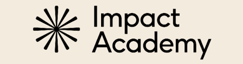
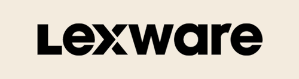
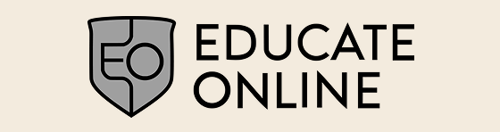
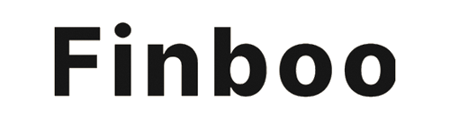
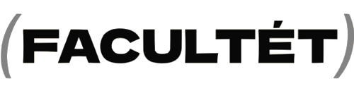
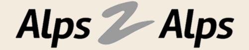
Бесплатно · онлайн
Ближайший вебинар — регистрируйтесь
Два часа с реальным бухгалтером из Германии: расскажем, как устроена работа в немецкой компании, как получить Bildungsgutschein и разберём живые кейсы выпускников
БЕСПЛАТНООНЛАЙННА РУССКОМ
Профессия, которую не убьёт ИИ: как стать бухгалтером в Германии за 7 месяцев
SternMeister — онлайн-академия для русскоязычных в Германии. Мы обучаем двум перспективным офисным профессиям: бухгалтер (Finanzbuchhalter) и медицинский администратор (Praxismanager).
Частые вопросы (FAQ)
Стоимость обучения зависит от выбранной программы и формата — подробно расскажем на бесплатной консультации. Если вы зарегистрированы в Jobcenter или Agentur für Arbeit, обучение можно пройти бесплатно по Bildungsgutschein. При самостоятельной оплате действует скидка за единовременный платёж, а также доступна внутренняя рассрочка SternMeister на 5–7 месяцев.
Bildungsgutschein — ваучер на обучение от Jobcenter или Agentur für Arbeit. Если консультант одобрит его для выбранной программы, стоимость курса оплачивается из средств ведомства. Мы подскажем, какие документы подготовить.
Курс «Бухгалтер» длится 7 месяцев, «Медицинский администратор» — 6 месяцев, обучение полностью онлайн. Новые потоки стартуют регулярно; точную дату ближайшего набора и число мест в группе уточняйте на консультации.
Занятия идут онлайн на русском языке: живые уроки вечером, в среднем по 2 часа 3 раза в неделю, а записи всех уроков доступны в личном кабинете 24/7. Поэтому курс реально совмещать с работой — на полную ставку или Teilzeit.
Достаточно уровня A2. Обучение идёт на русском языке, а профильный немецкий вынесен в отдельный блок: 150 часов бухгалтерской или медицинской лексики плюс AI-тренажёр собеседований. К выпуску вы уверенно проходите собеседование на уровне A2–B1.
Да. Программа рассчитана на старт с нуля: мы даём и основы бухгалтерии, и работу в программах (DATEV, Lexware, Google Tabellen) с первых занятий. Опыт в Excel или бухгалтерии не нужен — многие выпускники пришли из совершенно других сфер.
На курсе вы работаете в DATEV и Lexware — программах, в которых ведут учёт немецкие компании, а также в Google Tabellen и AI-инструментах. Занятия и задания объясняем на русском языке, практика идёт на образовательных версиях (мы — партнёр DATEV и Lexware), сами программы на немецком — так вы сразу привыкаете к рабочей среде.
После курса вы получаете сертификат Weiterbildung от DEKRA — он действителен по всей Германии, и его ценят работодатели. Для работы бухгалтером экзамен IHK необязателен; при желании к нему можно готовиться отдельно после курса.
Да. Карьерный центр адаптирует резюме под немецкие стандарты, проводит тренировочные собеседования и остаётся на связи, пока вы не найдёте работу. В среднем выпускники трудоустраиваются за 2–4 месяца после окончания обучения.
Да, у нас учится много украинцев. Обучение на русском снимает языковой барьер на старте, а оплатить курс через Bildungsgutschein можно и со статусом §24.
Да — вы сможете вести повседневную бухгалтерию Gewerbe или Kleinunternehmen: выставлять счета, готовить данные и работать в DATEV Unternehmen Online, передавая отчётность своему Steuerberater. Частые ситуации (Kleinunternehmerregelung, НДС) разбираем в блоге.
У каждого студента есть персональный куратор и группа поддержки — вы не останетесь одни. Записи всех уроков доступны в кабинете, поэтому материал можно пересматривать в своём темпе.
Обучение бухгалтерии с нуля идёт на русском языке от основ немецкого учёта и практики в DATEV и Lexware до готового резюме и первой работы в Германии
Программы аккредитованы по AZAV сам курс можно оплатить ваучером Bildungsgutschein
Ситуации, с которыми сталкиваются бухгалтеры в Германии, разбираем в блоге: Kleinunternehmerregelung, бухгалтерия Gewerbe, зарплаты и другие важные вопросы
Остались вопросы?
Запишитесь на бесплатную консультацию — подскажем, с чего начать